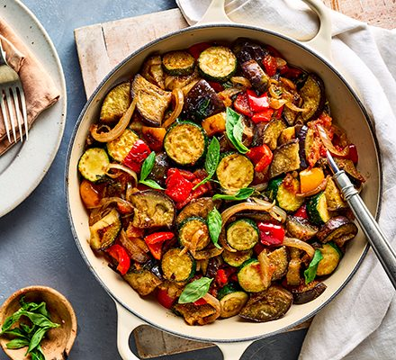

Ratatouille

Ingredients
- 2 onion thinly sliced
- 2 Courgette sliced
- 1 Aubergine cut into 1.5cm chunks
- 2 red or yellow peppers chopped into bite-size chunks
- 1 tablespoon olive oil
- 7 garlic cloves minced
- 2 400 tomato pulp
- 2 tablespoon tomato concentrate
- 1 teaspoon dried oregano
- 8 basil leaves
Instructions
- Heat a pot on low heat then add the olive oil.
- Add onions and saute for 10 minutes, or until they're
soft. Stir sporadically
- Add in garlic and the oter vegetables, cook for 3 minutes at medium heat, add salt and pepper.
- Low the heat and let it cook for 40 minutes